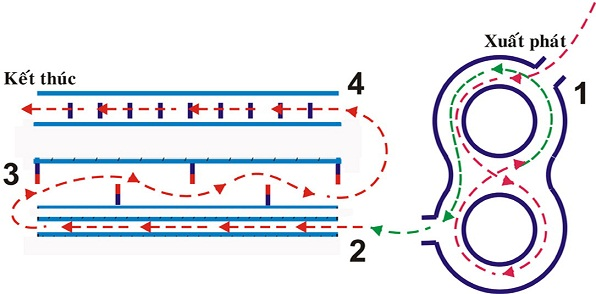

Kinh nghiệm thi thực hành lái xe A1
Những điều bạn cần phải làm trước:
Sau khi đăng kí thi bằng lái xe máy A1 tại văn phòng của trường, các bạn được phát thẻ tập lái,
và được quyền tới sân tập tự do ( tập bằng xe của bạn) và mọi thời gian bạn sắp xếp được hoàn
toàn miễn phí.
Việc tập trước sẽ tránh cho các bạn bỡ ngỡ khi vô vòng số 8, từ cách cua quẹo trái phải như nào,
cách để số mấy đi thì hợp lí ( thông thường sẽ có mũi tên hướng dẫn trên vòng kẻ - cứ đi theo
mũi tên, để sẵn số 02 là đi được rồi).

Ngày thi bạn tới sớm trước 1h – ví dụ lịch thi vào 13h thì 12h có mặt hoặc tới lúc 6h30 với lịch
thi vào buổi sáng để được tập miễn phí trên chính xe cảm ứng.
Những lưu ý sau:
Đi ngược vòng – khi xuất phát bạn bắt buộc rẽ tay phải, nếu rẽ trái – out ngay lập tức, điều này
giống với yêu cầu khi ra đường bạn phải đi về bên tay phải, không chấp nhận việc đi trái
đường.
Té xe: Đối với việc chạy trong vòng số 8 hoặc 3 bài liên hoàn - dường thẳng, quanh co, gập ghềnh
đều yêu cầu bạn không để bị té ngã, thà chống chân, dừng xe lại khi sắp té, chấp nhận bị trừ
“kép” – ( lỗi chống chân -trừ 05 điểm, lỗi tắt máy trừ 05 điểm, tổng trừ 1 lần 10 điểm) chứ
không để bị ngã.
Hai bánh xe đi hẳn ra ngoài vòng số 8: Tương tự như việc bị té xe, khi bị 1 bánh ra ngoài rồi
thì nhanh chóng chống chân trái, đạp phanh bằng chân phải - không cho xe bị ra ngoài vòng.
Đặc biệt lưu ý: khi xuất phát nên để xe ở vị trí như bên dưới để dễ dàng vô vòng quẹo phải mà
không đè vạch tới 2 lần - vừa đỡ mất điểm oan vừa không bị mất tinh thần chiến đấu.
Trước khi lên xe thực hành phải đội nón bảo hiểm nhé các bạn.
Các lỗi thường bị mất điểm nhất khi chạy thực hành – không tính những lỗi bị loại trực tiếp
đã liệt kê bên trên:
Đè vạch khi xuất phát – thường bị trừ điểm kép vì mới vô bánh trước sẽ đè vạch bên trong - bị
trừ 1 lần, bạn đánh tay lái gấp về bên phải – bánh sau dính tiếp vô vạch ngoài -trừ thêm 5
điểm
Chống chân trong vòng số 8 – cái này bình thường, thà chống chân chứ không để té - thường xảy ra
khi các bạn đi quá chậm hoặc không thuộc bài - chạy tới nửa vòng rồi phân vân không biết làm gì,
thế là suy nghĩ , giảm ga và…chống chân.
Bài thi đường quanh co, bắt buộc phải “lượn” qua trái - phải nhé, bạn nào mắt nhìn phí trước,
mặt nghiêm túc và đi thẳng sẽ bị loại luôn đó, vì mỗi lần đè chướng ngại vật trừ 05 điểm, mà có
tới ….05 vạch kẻ.
Bài thi đường thẳng - chỉ cần đi thẳng.
Bài thi đường gập ghềnh - về số 1 hoặc 2, đi từ từ qua các mố nhấp nhô, lưu ý mỗi mố có chiều
cao từ 12-15 cm, cách nhau 25cm nên việc để số 3 hoặc 4 và chạy nhanh qua y hệt kiểu cưỡi ngựa
phi nước đại, bạn sẽ nhảy chồm chồm trong bài thi và nếu không may mà té thì out luôn đó.
Kết thúc bài thi nhớ vòng xe về vị trí xuất phát, cởi nón bảo hiểm và trả xe cho trường, sau
đó qua qua phòng điều hành kí tên vô biên bản, lúc này biết đậu biết rớt luôn rồi đó, trường hợp
đậu thì vui vẻ lấy lại CMND và ra về, sau 2-3 tuần sẽ có bằng. Còn trường hợp rớt thì cũng nên
vui vẻ ( nắng mưa là chuyện của giời – thi đi thi lại là đời học viên mà - hehe) đóng phí thi
lại phần này nhé.